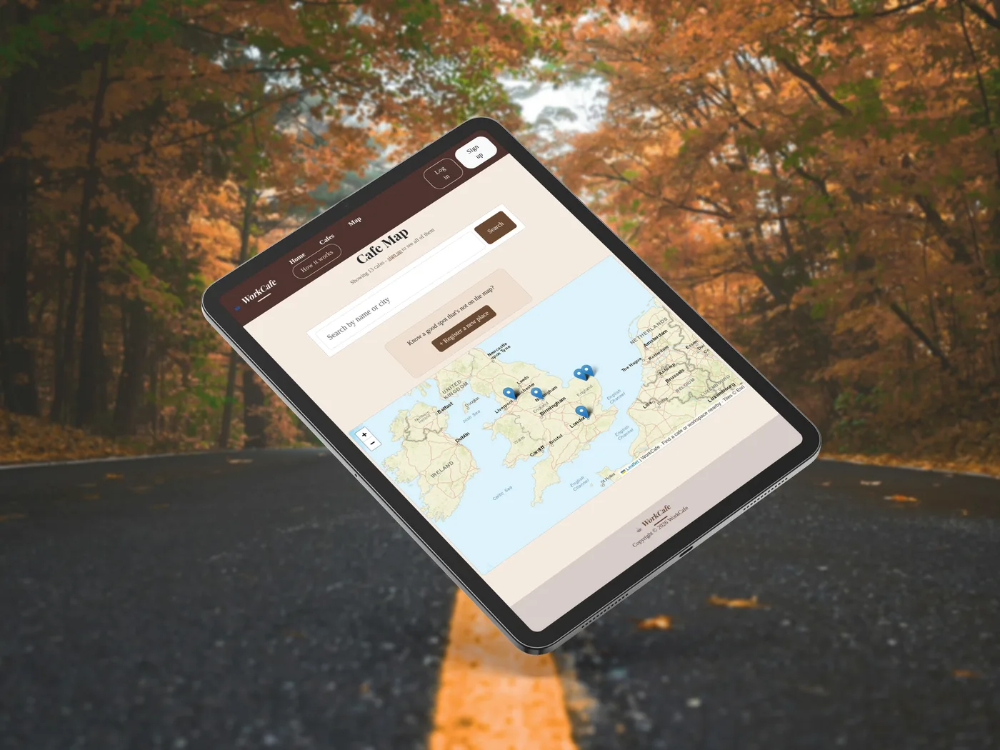
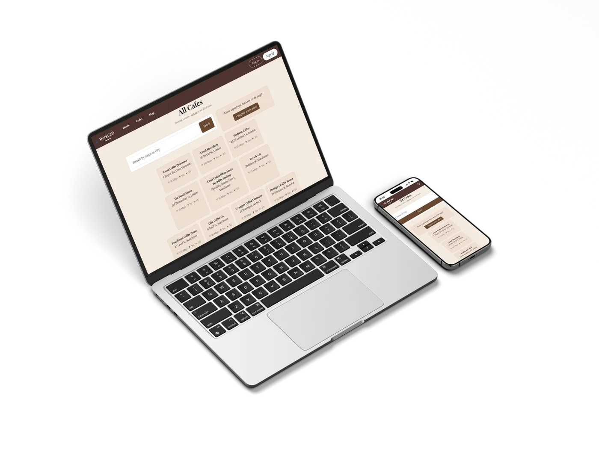
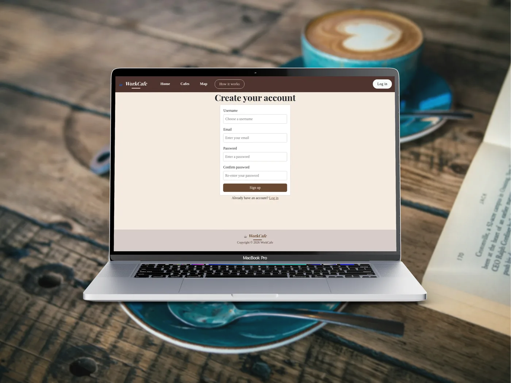

Full-stack web app
WorkCafe
A café finder for people who work remotely: where is the good wifi, the power socket and the quiet corner?
- My roleDesign and development
- TypeDiploma project (Milestone 3)
- StackPython, Django, PostgreSQL, Heroku




The problem
Students, freelancers and remote workers often need somewhere to work for a few hours. They do not know which cafés nearby have decent wifi, power sockets and a quiet corner, and good tips get shared in group chats and then forgotten.
What I built
A searchable café directory with a map. Anyone can search cafés by name or city and see them on the map without an account. Each café shows its wifi speed, whether it has power sockets and how quiet it usually is. Registered users can add new cafés, edit or delete the ones they added, and save cafés as favourites.
Technical details
- Relational data model with the Django ORM on PostgreSQL.
- Django authentication for sign-up and login, with full CRUD on cafés. Only the owner of a café can edit or delete it.
- The current weather comes from the OpenWeatherMap API, called from Python with
requests. - Interactive café map built with Leaflet and Esri map tiles.
- Deployed on Heroku with gunicorn, WhiteNoise for static files and
dj-database-urlfor the database connection. - Planned with user stories on a GitHub Project board, moved from To do to Done as each one was built and tested.
Testing
8 automated tests with Django's TestCase, run with python manage.py test core. They cover the homepage, sign-up, a failed login, login-required pages, adding a café, permissions, favourites and deleting. I also tested every user story by hand in Edge, Firefox and on an iPhone, and checked the HTML and CSS with the W3C validators.
This test checks that a user cannot edit a café that belongs to someone else:
def test_only_owner_can_edit_cafe(self):
"""A user should not be able to edit someone else's cafe"""
self.client.login(username='otheruser', password='testpass123')
response = self.client.get(reverse('edit_cafe', args=[self.cafe.id]))
self.assertEqual(response.status_code, 404)Challenges and fixes
The weather showed 290 degrees. The API request was missing units: metric, so the API returned the temperature in Kelvin. Adding the parameter fixed it.
The map stopped loading on the live site. The OpenStreetMap tile server showed a usage policy warning, because it is not meant for deployed public apps. I switched to Esri's free tiles, which need no API key.
Pages returned 404 on Heroku. At first only the homepage was a real Django view. I added a view, template and URL for the Map, Login, Sign up and Add a café pages so navigation worked once deployed.
Cafés appeared in the wrong place on the map. Two seed cafés had their latitude and longitude swapped. I corrected the values in the seed script.
What I learned
Things can work fine on my computer and break once the site is online: the map tiles and static files only caused problems after deployment. Next time I would also decide on the database models first, before building any pages.
What I would do next
- Check in to the café you are working from, and check out when you leave.
- Show who is checked in at a café right now and how many free places it has.
- Let users leave comments on cafés, for example to say a café has closed.
- Show a weather forecast for the next few days.